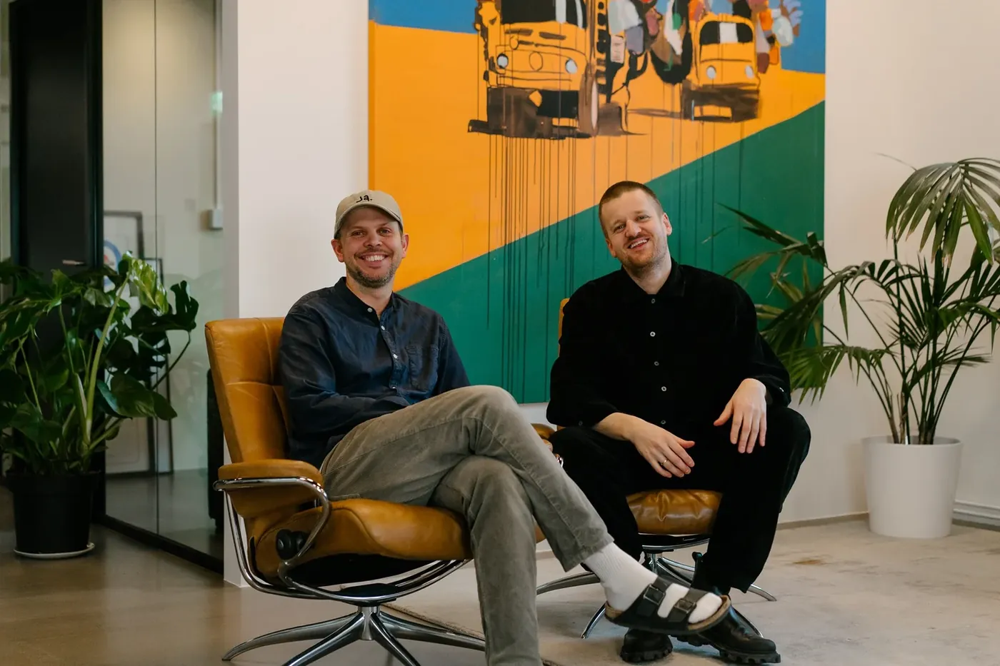

Kreativt byrå · Oslo
Store idear, lita avdeling
Litt som eit stort reklamebyrå, berre mykje mindre. Brunch jobbar med kampanjar, konsept og innhald for merkevara og organisasjonar som vil bli lagt merke til.
StadOslo
KontaktMarkus
Telefon+47 954 49 714
Plakat · prinsippark i lag
Brunchidé
Brunchkonsept
Brunchlevert
idé · konsept · leveranseillustrasjon
Prosjekter
Noko av det vi har gjort
Kampanjar, magasin, lyd, modellar og mykje anna.
Kva vi gjer
Idé før produksjon
Byrået er lite, men oppdraga er store nok. Vi jobbar med konsept og innhald, og set saman produksjon etter kva idéen treng — ikkje omvendt.
- Konsept og kampanje
- Innhald og produksjon
- Merkevare og posisjon

«Litt som eit stort reklamebyrå, berre mykje mindre.»
Har de ei sak som må ut?
Ta kontakt, så tenkjer vi høgt saman.